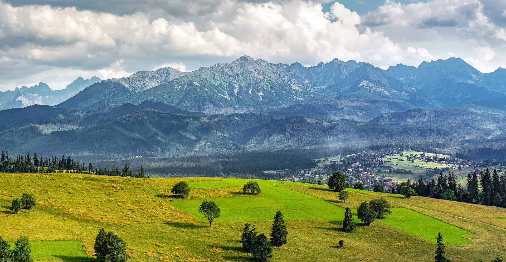

타트라 산 투어
폴란드 남부와 슬로바키아 북부의 국경 부근까지 동서 방향으로 뻗은 산맥이다.타트리산맥에는 다양한 식물, 동물이 분포하고 있다. 1,000종이 넘는 관속식물 이외에 이끼류 450종, 조류 200종, 포유류 43종이 존재한다. 등산, 스키로 유명한 휴양 관광지로서 폴란드 겨울 스포츠의 메카인 산에 올라 환상적인 풍경을 감상하고 전통적인 산악 건축물, 상점, 박물관을 구경할 수 있다. 자코파네는 겨울철에도 그리 춥지 않아 스키어들이 즐겨 찾는 폴란드 제일의 휴양지다. 또한 폴란드, 슬로바키아에서 국립공원으로 지정되어 있으며 1992년 유네스코가 지정한 인간 생물권 계획 보존 구역으로 등재되었다.